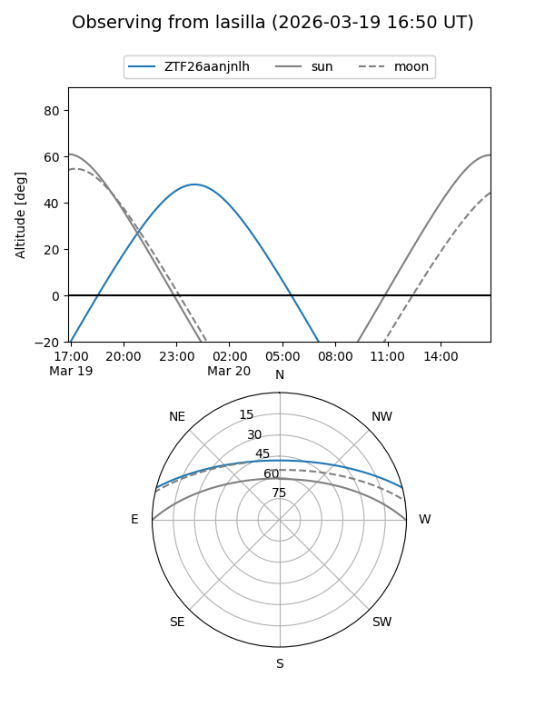
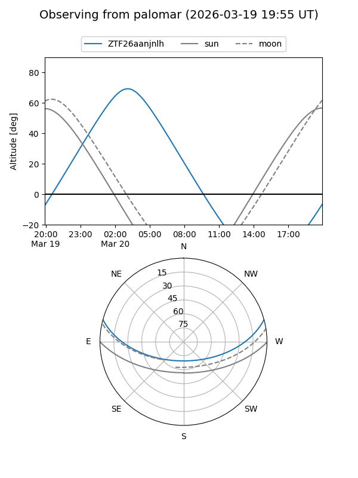

ZTF26aanjnlh
Target ZTF26aanjnlh at 2026-03-20 04:13
Aliases and brokers:
FINK: link
Lasair: link
ALeRCE: link
alt names
ZTF26aanjnlh (ztf,fink_ztf)
Coordinates:
equatorial (ra, dec) = 106.8530,+12.78442
equatorial (HMS+DMS) = 07:07:24.73,+12:47:03.90
galactic (l, b) = (203.2503,+9.28513)
Flags:
Photometry:
last ztfg=18.96
1 ztfg detections
Lightcurve
Visibility


Additional plots